9 Results from surveys on gay rights
“Surveys show that surveys never lie.”
Background Attitudes to same-sex marriage have been surveyed over a number of years. The survey discussed here was part of Annenberg’s 2004 election year survey in the United States.
Questions How did people’s opinions on same-sex marriage vary with age? How did the opinions vary across the country? Were there differences between people’s opinions on a law at state level and their opinions on a Constitutional Amendment at federal level?
Sources The Annenberg Public Policy Center of the University of Pennsylvania
Structure There were 81422 people surveyed and 84 variables.
9.1 Survey results by age, sex, and race
Annenberg carried out rolling cross-section surveys for the US presidential elections of 2000, 2004, and 2008. The interviews for the 2004 National Annenberg Election survey were carried out between October 2003 and November 2004. Questions were asked on a range of topics and the dataset includes responses to many, but not all. Only a few questions are studied here. A third of respondents were asked if they would favour or oppose a law allowing same-sex marriage in their state, while all respondents were asked if they were in favour of or opposed to introducing a Constitutional Amendment making same-sex marriage illegal.
Code
data(SurvGR)
naesXz2 <- SurvGR %>% mutate(opF=ifelse(valF<5, valF, NA), opS=ifelse(valS<5, valS, NA))
naesXz2 <- naesXz2 %>% mutate(Spro=ifelse(valS %in% c(1,2), "yes", "no"))
naesXz2 <- naesXz2 %>% group_by(State) %>% mutate(nState=n(), proS=sum(Spro=="yes")/(sum(Spro=="yes")+sum(!is.na(opS) & Spro=="no"))) %>% ungroup() %>% mutate(pState=fct_reorder(State, proS, mean))Code
naesSA <- naesXz2 %>% filter(age < 98) %>% mutate(age=ifelse(age>81, 81, age)) %>% group_by(age) %>% summarise(Spro=sum(valS %in% c(1,2)), Scon=sum(valS %in% c(3,4)), nn=Spro+Scon, Sfav=Spro/nn)
ggplot(naesSA, aes(age, Sfav)) + geom_point(aes(size=nn), colour="dodgerblue3") + ylab(NULL) + xlab(NULL) + scale_y_continuous(labels = percent_format(), limits=c(0, 1), breaks=c(0, 0.25, 0.5, 0.75, 1)) + geom_hline(yintercept=0.5, linetype="dashed", colour="firebrick3") + theme(legend.position="none") + scale_size_area()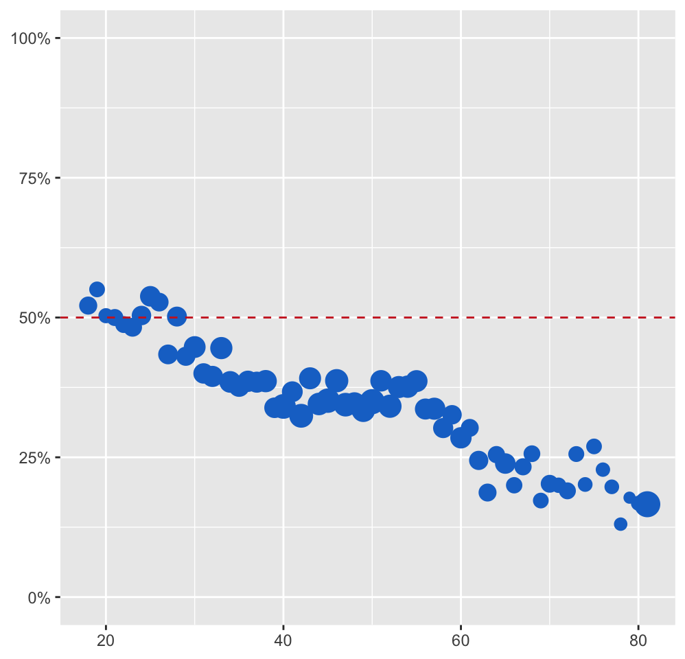
Figure 9.1: Support for same-sex marriage at state level by respondent age. A red dotted line marks 50% support. Cases with any values missing have been excluded and data for ages over 80 combined into one value at 81. Point areas are proportional to the number of respondents of that age.
There is a fairly steady decline in support by age, starting with a few young ages with majority support for same-sex marriage (amongst those expressing an opinion, those responding “Don’t know” or refusing to answer have been treated as missing). With increasing age it looks like a step function with about the same level of support between ages 40 and 55 and similarly between ages 62 and 77. This was discussed in Gelman et al. (2020) where they suggested and compared several nonlinear models.
The dataset is large enough to look at opinions by age and sex together. Figure 9.2 shows that females are more in favour than males at almost every age. The effect on these opinions of sex and race together can also be investigated. Figure 9.3 shows a doubledecker plot for this. The patterns of support by race are the same for males and females, with female rates being higher. Rates for blacks are lowest.
Code
naesSAG <- naesXz2 %>% filter(age < 98) %>% mutate(age=ifelse(age>81, 81, age)) %>% group_by(age, gender) %>% summarise(Spro=sum(valS %in% c(1,2)), Scon=sum(valS %in% c(3,4)), Sfav=Spro/(Spro+Scon), ns=Spro+Scon)
ggplot(naesSAG, aes(age, Sfav)) + geom_line(aes(colour=gender)) + ylab(NULL) + xlab(NULL) + theme(legend.position="none") + scale_colour_manual(values=c("purple2", "springgreen3")) + scale_y_continuous(labels = percent_format(), limits=c(0, 1), breaks=c(0, 0.25, 0.5, 0.75, 1)) + geom_hline(yintercept=0.5, linetype="dashed", colour="firebrick3")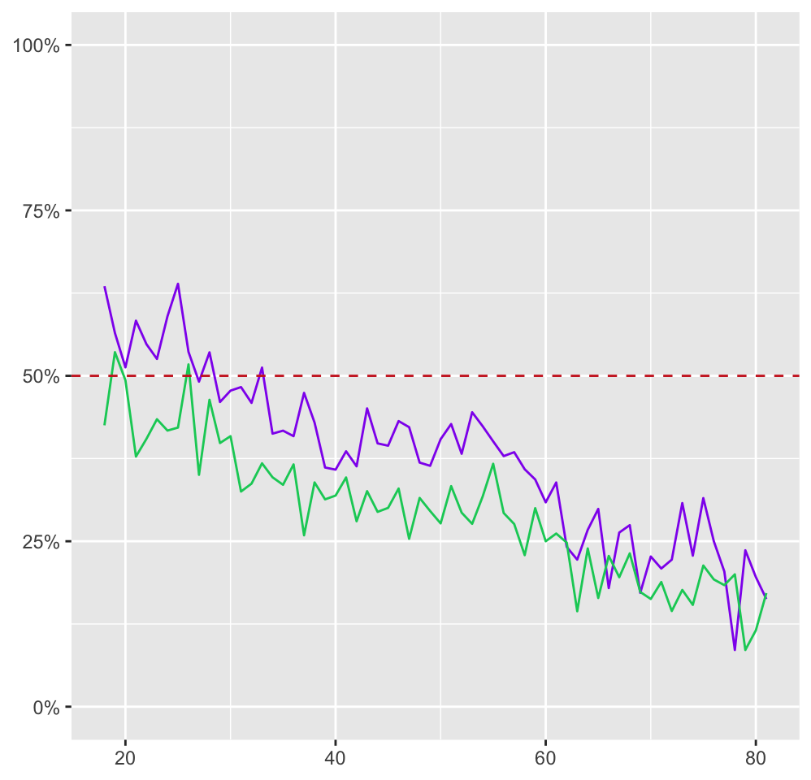
Figure 9.2: Support for same-sex marriage at state level by age of respondent for females (purple) and males (green)
Code
naesXz2 <- naesXz2 %>% mutate(spro=fct_rev(Spro), Gender=factor(gender, levels=c("Male", "Female")))
gayGR1 <- ggplot(naesXz2 %>% filter(!is.na(opS))) + geom_mosaic(aes(x=product(race, Gender), fill=spro), divider=ddecker(), offset=0.005) + xlab("") + ylab("") + theme(legend.position="none", axis.ticks=element_blank(), panel.background=element_blank(), plot.margin=margin(0,0,0,0)) + scale_fill_manual(values=c("red", "grey80")) +
scale_x_productlist(labels = paste0(rep(c("Bl", "Hisp", "Oth", "White"), 2), "\n", rep(c(" ", " ", " Male", " ", " ", " ", " Female", " "))), expand = c(0, 0)) + scale_y_productlist(expand = c(0, 0))
gayGR1
Figure 9.3: Support for same-sex marriage at state level by sex and race
9.2 Mapping the survey results
It is possible to look at how rates of support vary by state and, unsurprisingly, there are substantial differences. Figure 9.4 is a choropleth map of the support for a state law permitting same-sex marriage in each state. (Except that there is no information for Alaska and Hawaii as the survey was restricted to the 48 continental states and Washington D.C.)
Code
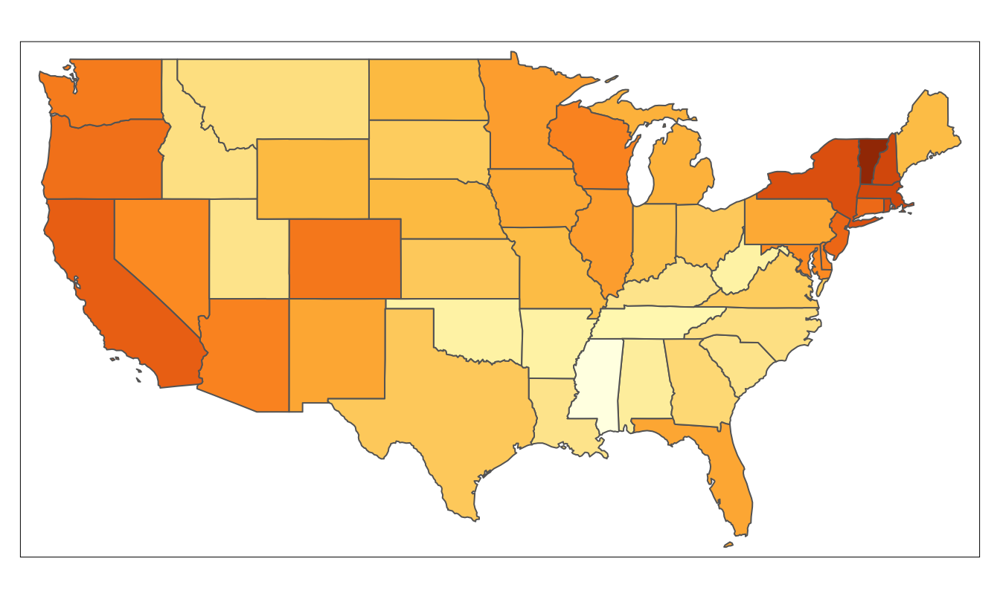
Figure 9.4: Support for same-sex marriage at state level on a continuous colour scale from 10% to 70%
Some regional patterns are apparent, such as the higher support in New England and on the West Coast. As always with choropleth maps, area does not reflect population. There are several larger states with small populations and smaller states with larger populations. This is also reflected in the numbers asked in each state. Figure 9.5 shows the estimates of proportions supporting a same-sex marriage law with 95% confidence intervals. The longest interval is for Washington, DC, with only 31 asked and the shortest interval is for California with 1891 asked. The states have been grouped by Census Bureau regions and ordered within region by percentage in favour. The NorthEast states split into two groups with Pennsylvania and Maine having much lower levels of support. The South also splits into two groups with Florida and the three small most northerly states having higher levels of support. The MidWest states have fairly similar values. Overall, very few states show a majority for same-sex marriage.
Code
USpsl <- USpsl %>% mutate(p1=ProStateLaw, hi=1.96*(p1*(1-p1)/nS)**0.5, low=p1-hi, upp=p1+hi)
regnames4 <- c("NorthEast", "South", "MidWest", "West")
colblindx <- colorblind_pal()(8)[1:4]
names(colblindx) <- regnames4
USpsl <- USpsl %>% mutate(Region=factor(Region, levels=c("NorthEast", "South", "MidWest", "West")))
gayCIx <- ggplot(USpsl, aes(fct_reorder(NAME, p1), p1)) + geom_point(aes(colour=Region), size=2) + geom_errorbar(aes(ymin = low, ymax = upp), width = 0.2) + ylab(NULL) + xlab(NULL) + coord_flip() + facet_grid(rows=vars(Region), scales="free_y", space="free_y") + scale_y_continuous(expand = c(0,0), limits=c(0,1), labels=percent) + theme(strip.text.y.right = element_text(angle = 0), legend.position="none") + scale_colour_manual(values=colblindx)
gayCIx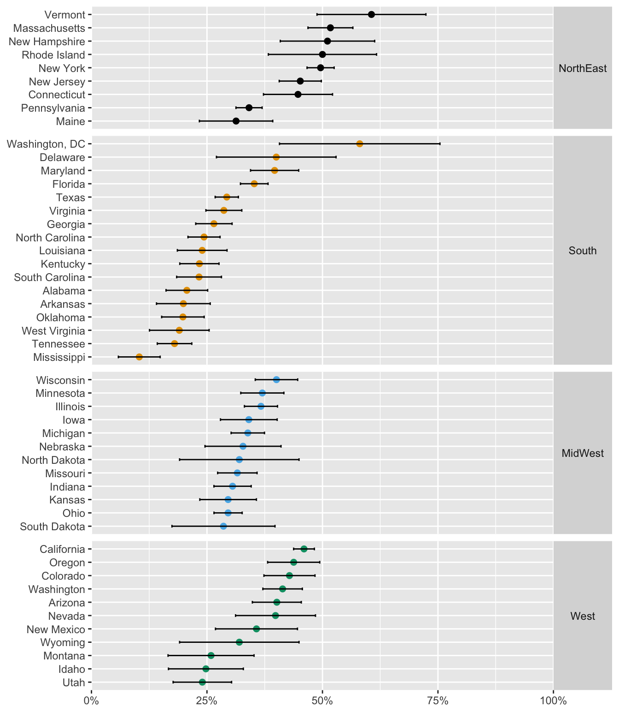
Figure 9.5: Support for same-sex marriage by state with 95% confidence intervals, states grouped by region and ordered within region by estimated population proportion in favour
Figure 9.6 shows a map of the regions.
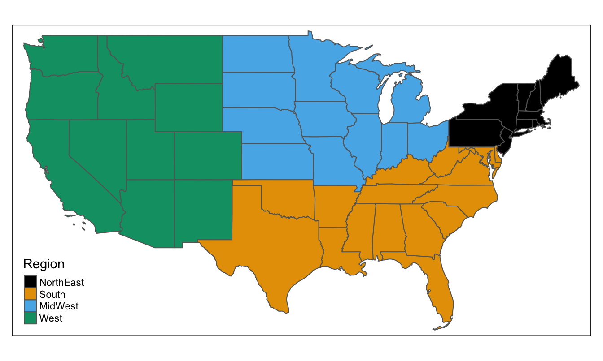
Figure 9.6: The four US regions defined by the Census Bureau
Code
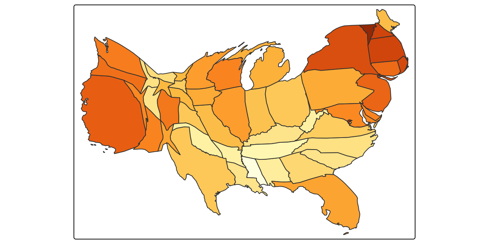
Figure 9.7: Support for same-sex marriage at state level using a population cartogram
Cartograms can be effective in getting round the population issue and Figure 9.7 uses the number of respondents as a substitute for the state population. It suggests the states separate into three main groups, the East, the West, and the centre.
9.3 Comparing responses to related, but different questions
Another question about same-sex marriage was whether respondents were in favour of or opposed to introducing a Constitutional Amendment making same-sex marriage illegal. All respondents were asked and the support shows a quite different pattern with age to that of Figure 9.1, as can be seen in Figure 9.8.
Code
naesFA <- naesXz2 %>% filter(age < 98) %>% mutate(age=ifelse(age>81, 81, age)) %>% group_by(age) %>% summarise(ns=n(), Fpro=sum(valF %in% c(3,4)), Fcon=sum(valF %in% c(1,2)), Ffav=Fpro/(Fpro+Fcon))
ggplot(naesFA, aes(age, Ffav)) + geom_point(aes(size=ns), colour="gold3") + ylab(NULL) + xlab(NULL) + scale_y_continuous(labels = percent_format(), limits=c(0, 1), breaks=c(0, 0.25, 0.5, 0.75, 1)) + geom_hline(yintercept=0.5, linetype="dashed", colour="firebrick3") + theme(legend.position="none") + scale_size_area()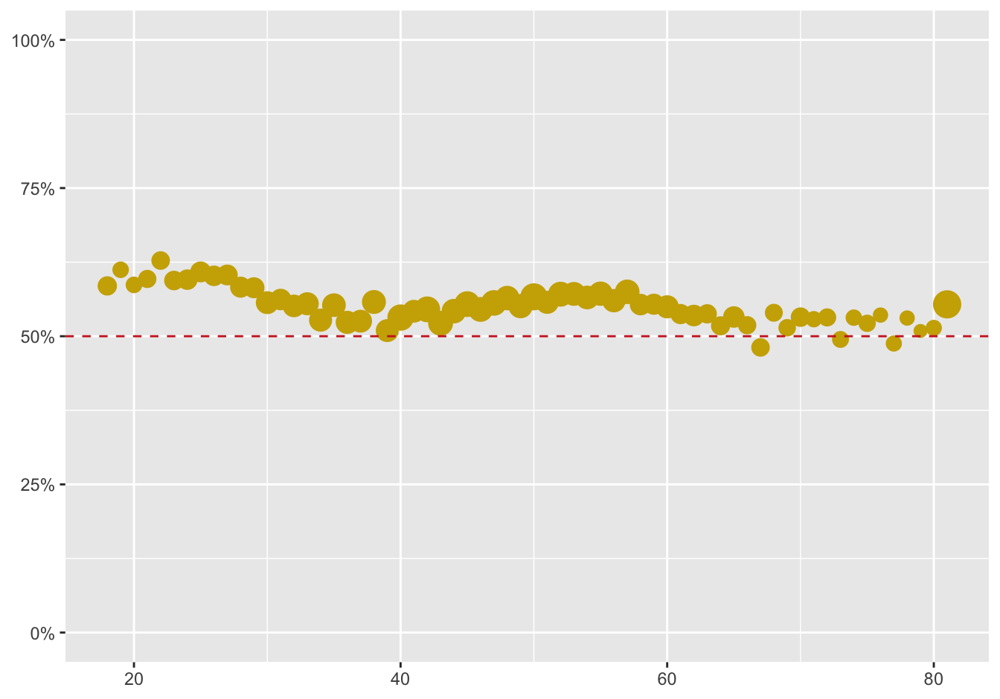
Figure 9.8: Scatterplot of opposition to a Constitutional Amendment making same-sex marriage illegal by age of respondent. Cases with any values missing have been excluded and data for ages above 80 have been combined into one value at 81. Point areas are proportional to the number of respondents of that age.
While there was a majority against same-sex marriage at state level for most ages except the youngest, there is a majority against a Constitutional Amendment at almost every age. There is also little difference in opinion across the ages concerning a Constitutional Amendment.
Including the influence of sex and drawing the graphics for the two questions beside one another helps making comparisons. Opposition to a Constitutional Amendment is higher for females than males at every age. The greater variability in the left graphic on state law is because only a third of the survey population was asked this question.
Code
state1 <- ggplot(naesSAG, aes(age, Sfav)) + geom_line(aes(colour=gender)) + ylab(NULL) + xlab(NULL) + theme(legend.position="none") + scale_colour_manual(values=c("purple2", "springgreen3")) + scale_y_continuous(labels = percent_format(), limits=c(0, 1), breaks=c(0, 0.25, 0.5, 0.75, 1)) + geom_hline(yintercept=0.5, linetype="dashed", colour="firebrick3")
naesFG <- naesXz2 %>% filter(age < 98) %>% mutate(age=ifelse(age>81, 81, age)) %>% group_by(age, gender) %>% summarise(Fpro=sum(valF %in% c(3,4)), Fcon=sum(valF %in% c(1,2)), Ffav=Fpro/(Fpro+Fcon), ns=Fpro+Fcon)
fed1 <- ggplot(naesFG, aes(age, Ffav)) + geom_line(aes(colour=gender)) + ylab(NULL) + xlab(NULL) + theme(legend.position="none") + scale_colour_manual(values=c("purple2", "springgreen3")) + scale_y_continuous(labels = percent_format(), limits=c(0, 1), breaks=c(0, 0.25, 0.5, 0.75, 1)) + geom_hline(yintercept=0.5, linetype="dashed", colour="firebrick3")
state1 + fed1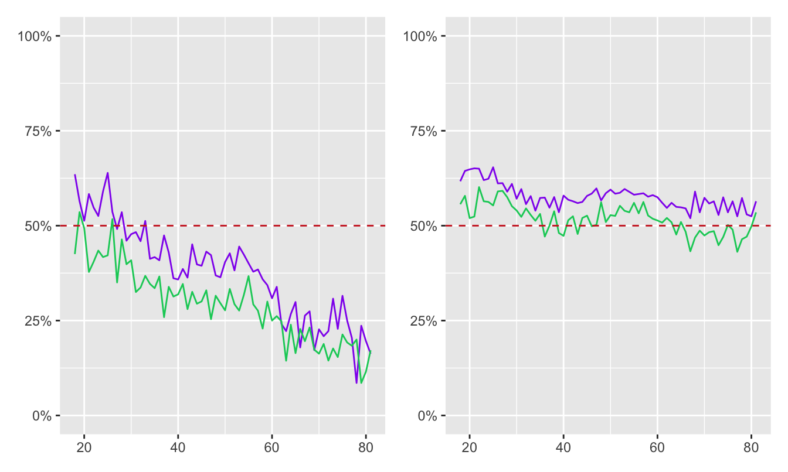
Figure 9.9: Line plots of support for same-sex marriage at federal level (left) and opposition to a Constitutional Amendment (right) by age of respondent by males (green) and females (purple)
The differences between the graphics depend on the exact form of the questions asked. Annenberg provide access to the full survey information on request. There were two versions of the state question asked at different times in the 2004 survey and five versions of the federal question. The differences within each group were slight, but there were major differences between the two groups. For the state question, “in favour” meant in favour of same-sex marriage. For the federal question, “in favour” meant in favour of a Constitutional Amendment banning same-sex marriage. Respondents to this question were offered an additional possible answer of “Neither favor nor oppose”.
Figure 9.10 shows barcharts for the full sets of responses on both questions, excluding respondents who were not asked. Most people with opinions on the issues have strong opinions. The different framings of the two questions were important.
Code
naesXz2 <- naesXz2 %>% mutate(ValF=factor(valF, labels=c("Strongly favor", "Somewhat favor", "Somewhat oppose", "Strongly oppose", "Neither", "Don't know", "Refused")), ValS=factor(valS, labels=c("Strongly favor", "Somewhat favor", "Somewhat oppose", "Strongly oppose", "Don't know", "Refused")))
gs1 <- ggplot(naesXz2 %>% filter(!is.na(ValS)), aes(ValS)) + geom_bar(aes(fill=ValS)) + ylab(NULL) + xlab(NULL) + ggtitle("For same-sex marriage in state") + theme(plot.title=element_text(hjust=0.5, vjust=3), legend.position="none", axis.text.x = element_text(angle = -45)) + scale_fill_manual(values=c(rep("dodgerblue3", 4), rep("grey70", 2)))
gs2 <- ggplot(naesXz2, aes(ValF)) + geom_bar(aes(fill=ValF)) + ylab(NULL) + xlab(NULL) + ggtitle("For a Constitutional Amendment banning same-sex marriage") + theme(plot.title=element_text(hjust=0.5, vjust=3), legend.position="none", axis.text.x = element_text(angle = -45)) + scale_fill_manual(values=c(rep("gold3", 4), rep("grey70", 3)))
gs1/gs2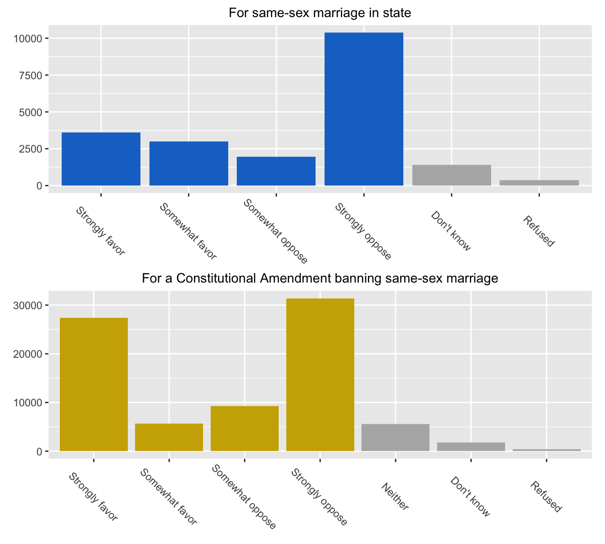
Figure 9.10: Barcharts of the full responses to the two questions
There were small numbers of “Don’t know” and “Refused”, as well as some who were neither for nor against the Constitutional Amendment question. Those who did not express opinions one way or the other have been coloured grey. The vertical scales are quite different, as only one third were asked the state question.
Figure 9.11 studies how those responded who gave their opinions on both questions, either strongly or just somewhat. Comparing answers of individuals is more informative than comparing distributions of aggregated answers.
Code
naesXz2 <- naesXz2 %>% mutate(OpF=factor(opF, labels=c("Strongly favor", "Somewhat favor", "Somewhat oppose", "Strongly oppose")), OpS=factor(opS, labels=c("Strongly favor", "Somewhat favor", "Somewhat oppose", "Strongly oppose")), OpFf=factor(opF, labels=c("VeryFor", "For", "Against", "VeryAgainst")), OpSs=factor(opS, labels=c("VeryFor", "For", "Against", "VeryAgainst")))
colblindy <- c("red3", colorblind_pal()(8)[c(5,2,3)])
FSx <- ggplot(data = naesXz2 %>% filter(!is.na(OpF), !is.na(OpS)), aes(OpS)) + geom_bar(aes(fill=OpF)) + facet_grid(rows=vars(OpF)) + ylab("Constitutional Amendment against same-sex marriage") + xlab("State same-sex marriage law") + theme(legend.position="none") + scale_fill_manual(values=colblindy)
FSx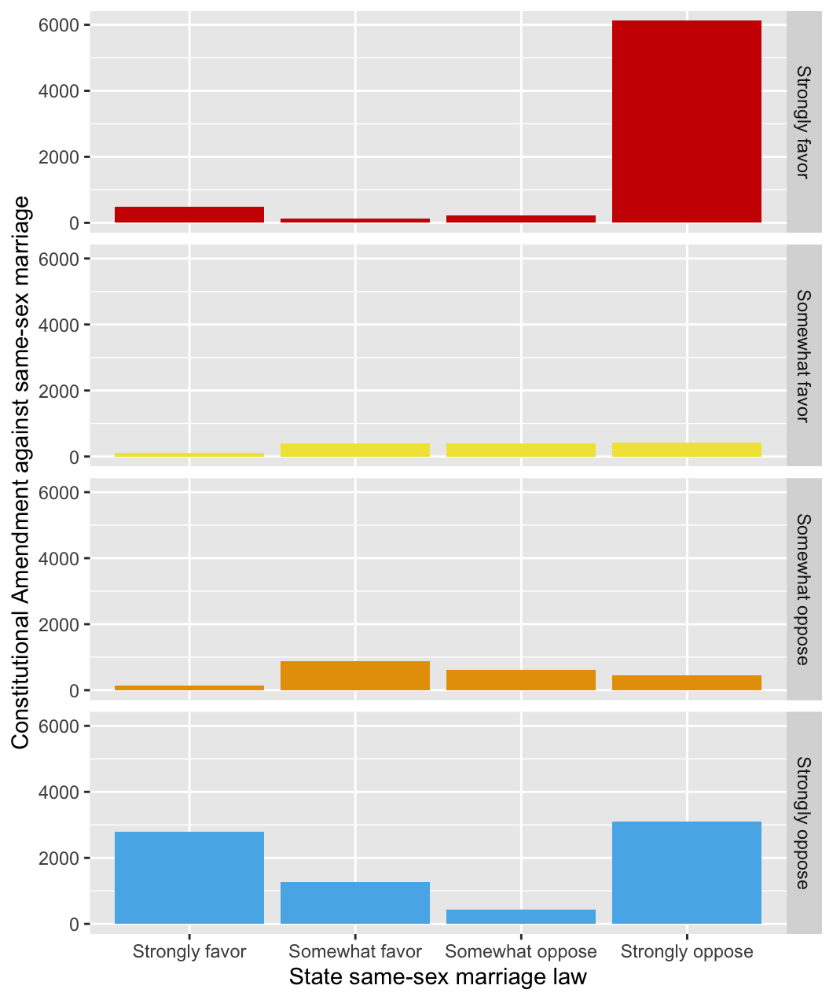
Figure 9.11: Multiple barcharts of the responses to supporting same-sex marriage at state level by the responses to supporting a Constitutional Amendment banning it
Code
FSxs <- ggplot(data = naesXz2 %>% filter(!is.na(OpFf), !is.na(OpSs)), aes(OpSs)) + geom_bar(aes(fill=OpFf)) + facet_grid(rows=vars(OpFf)) + ylab("Constitutional Amendment against same-sex marriage") + xlab("State same-sex marriage law") + theme(legend.position="none") + scale_fill_manual(values=colblindy)The most interesting feature is the combination of strongly opposing a same-sex marriage law for your own state while also strongly opposing a Constitutional Amendment banning same-sex marriage (bar lower right). This group is the main reason for the difference between the two graphics in Figure 9.9.
Responses to the two questions across the states can be compared by looking at the proportions who responded in favour of a state law for same-sex marriage and those who opposed a Constitutional Amendment making same-sex marriage illegal. Figure 9.12 shows the result, with circle sizes proportional to numbers giving an opinion on the Constitutional Amendment question.
Code
naesSST <- naesXz2 %>% group_by(State) %>% summarise(Spro=sum(valS %in% c(1,2)), Scon=sum(valS %in% c(3,4)), nn=Spro+Scon, Sfav=Spro/nn, Fpro=sum(valF %in% c(3,4)), Fcon=sum(valF %in% c(1,2)), mm=Fpro+Fcon, Ffav=Fpro/mm)
FSfav <- ggplot(naesSST, aes(Ffav, Sfav)) + ylab("In favour at state level") + xlab("Against Constitutional Amendment") + geom_point(aes(size=mm), colour="coral3") + coord_fixed(xlim=c(0, 1), ylim=c(0, 1)) + geom_abline(intercept=0, slope=1, linetype="dotted", colour="firebrick3") + theme(legend.position="none", plot.title=element_text(hjust=0.5, vjust=2)) + ggtitle("Opinions on same-sex marriage by state") + scale_size_area()
FSfav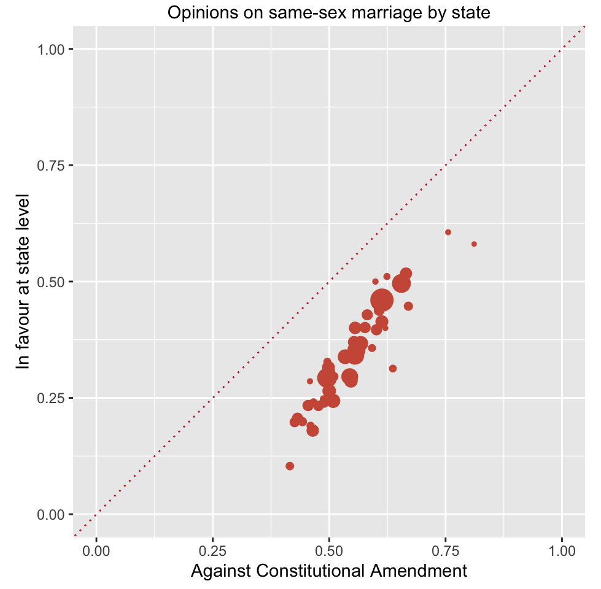
Figure 9.12: Scatterplot of responses to the two same-sex marriage questions by state (point areas are proportional to the number of respondents in that state)
Code
FSfavx <- ggplot(naesSST, aes(Ffav, Sfav)) + ylab("In favour at state level") + xlab("Against Constitutional Amendment") + geom_point(aes(size=mm), colour="coral3") + geom_abline(intercept=0, slope=1, linetype="dotted", colour="firebrick3") + theme(legend.position="none", plot.title=element_text(hjust=0.5, vjust=3)) + ggtitle("Opinions on same-sex marriage by state") + scale_size_area()Opposition to the Constitutional Amendment making same-sex marriage illegal was much stronger than support for a state law permitting same-sex marriage in all states. The two responses were highly correlated across the states with a slope greater than one, so as the federal variable rate increased, the state rate increased more. Opinions on gay rights are a complicated matter and there were several other related questions asked in the Annenberg survey. Much more analysis could be done. That survey was carried out almost twenty years ago and more recent surveys suggest that the US population has become more favourably disposed towards same-sex marriage.
Answers Older people were more against a same-sex marriage law in their state. Women were more in favour than men at all ages. There was a majority at all ages against a Constitutional Amendment banning same-sex marriage.
Further questions Respondents were asked additional related questions: How did their responses to those relate to their responses on same-sex marriage? What results do more recent surveys show? How do people’s opinions vary on other contentious issues in the survey?